7 月 11 日：A Theory of Contrastive Learning 等视觉表征论文归档
本页按日期归档近期论文，保留优先级、主题、来源与方法线索，方便回看同一批工作的研究脉络。
先读 A Theory of Contrastive Learning。从自然图像平稳统计和 augmentation 出发解析 contrastive optimum，是今天最基础的视觉 SSL 理论文。 其余论文按 P1/P2 与主题顺序扫读，重点看方法图、消融设置和是否能迁移到通用视觉表征。
论文索引
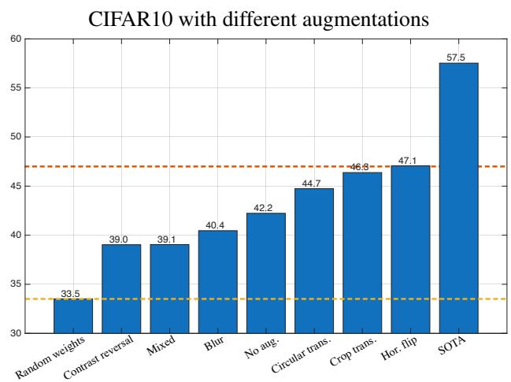
A Theory of Contrastive Learning with Natural Images
高相关；详见方法、贡献和实验边界。
方法：从自然图像平稳统计和 augmentation 出发解析 contrastive optimum，是今天最基础的视觉 SSL 理论文
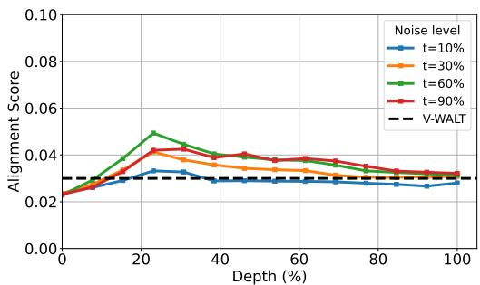
Gen4U: Unifying Video Generation and Understanding via Diffusion
高相关；详见方法、贡献和实验边界。
方法：系统探测视频 diffusion 中间层，并证明单次前向可作为跨任务视频 encoder
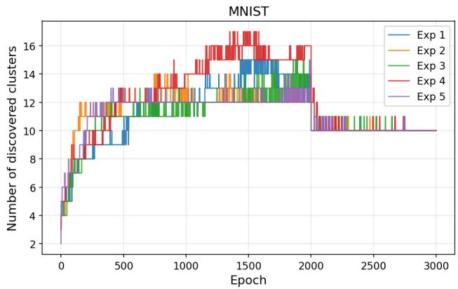
Converge to Surprise: Evolutionary Self-supervised Image Clustering
高相关；详见方法、贡献和实验边界。
方法：用 surprise score + evolution strategy 替代常规 per-step SSL loss，直接瞄准无类别数先验的图像聚类
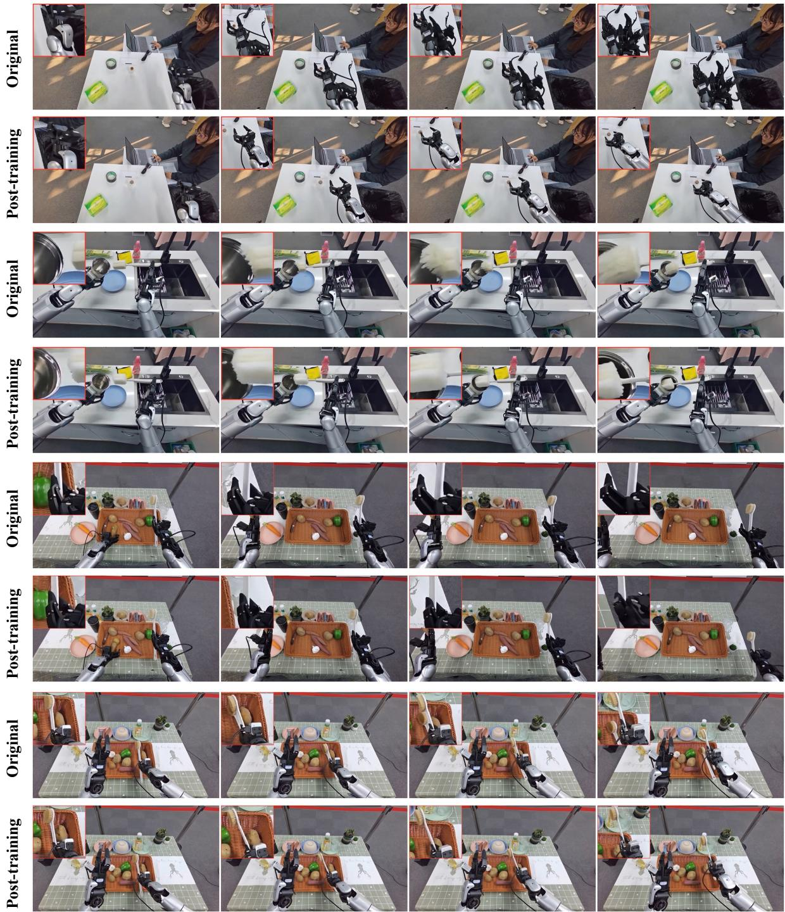
Scaling Mixture-of-Experts Video Pretraining for Embodied Intelligence
中高相关；详见方法、贡献和实验边界。
方法：虽然面向 embodied intelligence，但训练的是开源 MoE 视频基础模型，数据和架构对通用视频预训练有参考价值
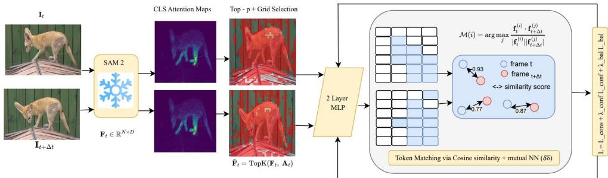
Attention-Guided Cross-Temporal Clustering for Self-Supervised Video Object Segmentation
中高相关；详见方法、贡献和实验边界。
方法：用 attention-guided token selection 与 cross-temporal clustering 学 part-aware video representations
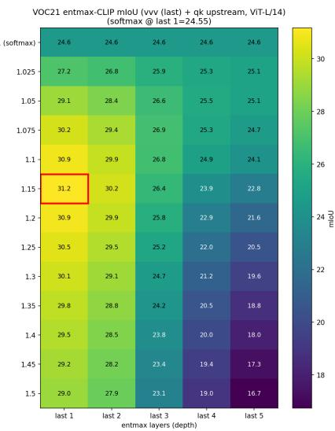
Sparse Attention for Dense Open-Vocabulary Prediction in CLIP
中高相关；详见方法、贡献和实验边界。
方法：训练后替换 CLIP final attention 为 sparse entmax，直接改善 dense open-vocabulary prediction 的空间证据
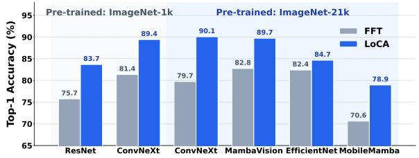
LoCA: Spatially-Aware Low-Rank Convolutional Adaptation of Vision Foundation Models
中高相关；详见方法、贡献和实验边界。
方法：关注 VFM adaptation 时如何保留预训练空间先验，对 frozen/self-supervised backbone 下游使用很实用
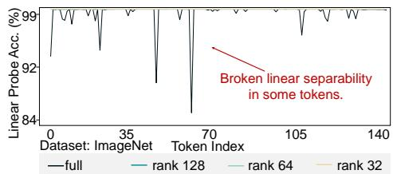
Dive Into the Implicit Biases of Low-rank Vision-language Alignment
中高相关；详见方法、贡献和实验边界。
方法：说明低秩 alignment 能保留视觉 token 线性可分性，适合理解 VLM 对视觉表征的破坏/保真
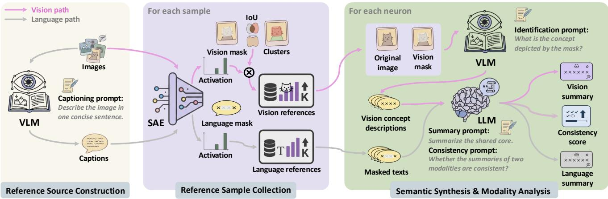
When Structured Sparse Autoencoders Learn Consistent Concepts Across Modalities
中相关；详见方法、贡献和实验边界。
方法：用结构稀疏约束让 SAE 在视觉-语言模态间学更一致的概念，偏诊断但表征相关
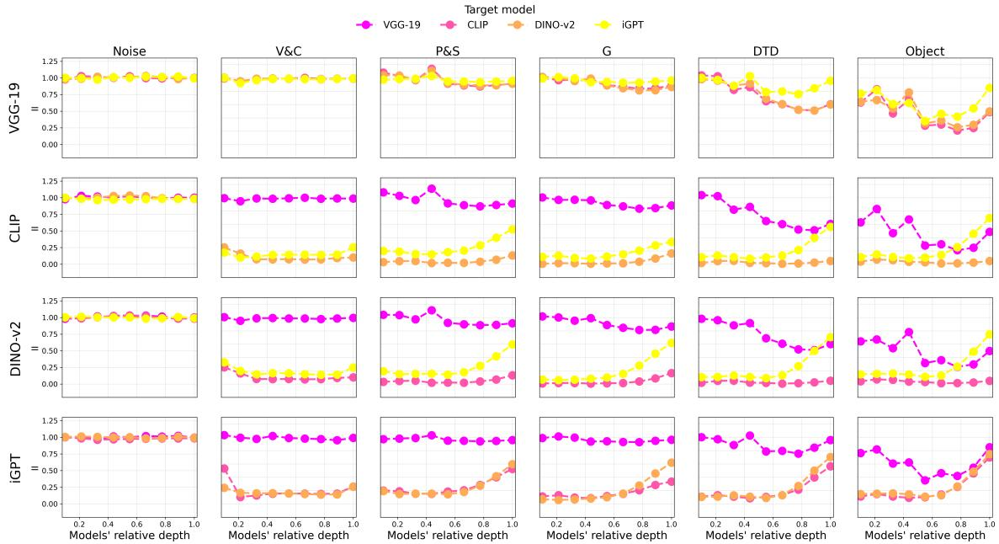
Texture Representations in Deep Vision Models
中相关；详见方法、贡献和实验边界。
方法：比较 CNN、ViT 和人类纹理表征，对“通用视觉表征到底捕获什么”有解释价值
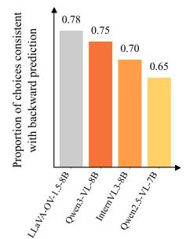
BUS: Brain-Inspired Unsupervised Self-Reflection for Advanced Multimodal Reasoning
中相关；详见方法、贡献和实验边界。
方法：通过无标签 backward prediction 增强 VLM reasoning，属于视觉-语言自监督式训练信号
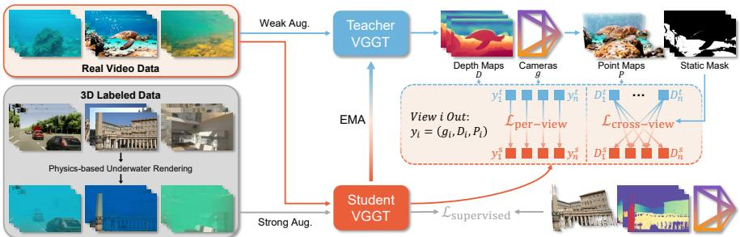
Wat3R: Underwater 3D Geometry Learning without Annotations
中相关；详见方法、贡献和实验边界。
方法：任务垂直但方法是无标注视频 + teacher-student + cross-view consistency，可迁移到 3D geometry SSL